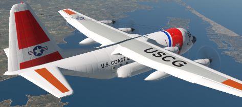

Welcome to the vUSCG
Where the Skies Meet the Sea

Partners
Partnerships play a crucial role in the success and vibrancy of any flight simulator community. These collaborations can involve various groups, including networks, other airlines, content creators, and developers. Here is how our partnerships enhance the vUSCG:
Enhanced Realism: Realism is a key factor in flight simulation. Partnerships with other groups allows us to practice different types of operations and work with a more diverse group of pilots/community members.
Community Engagement: Partnerships provide opportunities for community engagement. Events, competitions, and collaborative projects can be organized with the support of partners, fostering a sense of community among simulator users. This engagement contributes to the growth and sustainability of our community over time.
More Opportunities: Working with other vSOA groups allows vUSCG pilots to explore new parts of the world and work collaboratively with our fellow military flight simulation enthusiasts!